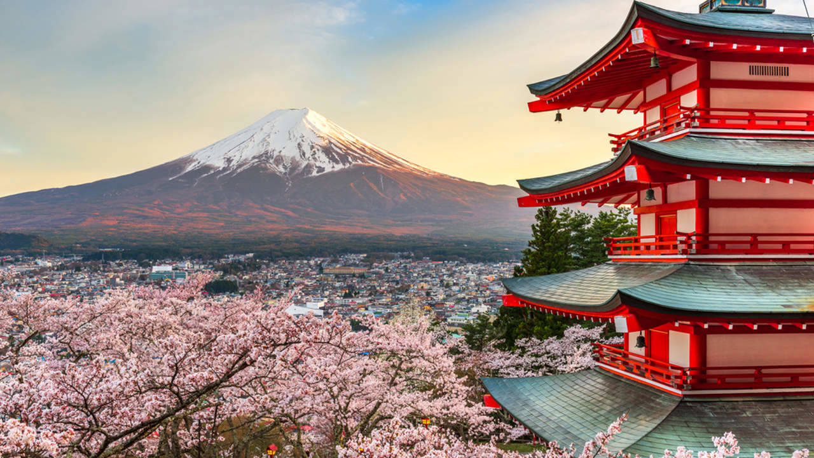
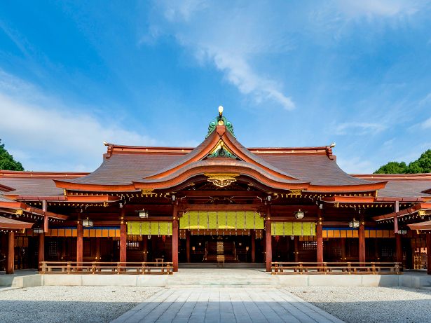
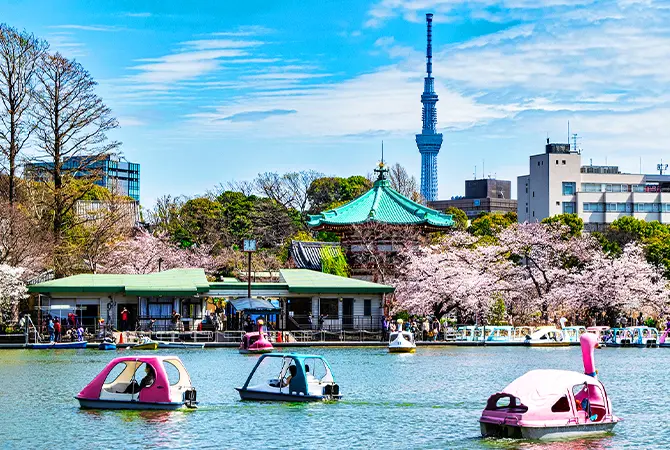

Sua próxima viagem:
Conheça Tokyo

Tokyo é a capital do Japão e uma das maiores cidades do mundo, conhecida por sua mistura única de tradição e modernidade. Com uma população de mais de 13 milhões de pessoas, Tokyo é um centro cultural, econômico e político vibrante. A cidade é famosa por seus arranha-céus futuristas, templos antigos, deliciosa culinária e transporte público eficiente.
Para os amantes de história
Descubra 3 destinos imperdíveis em Tokyo
Tóquio oferece uma vasta gama de atrações, desde locais históricos e culturais até experiências modernas e tecnológicas. Entre os principais atrativos estão o Mercado de Peixe de Tsukiji, a Tokyo Skytree, o cruzamento de Shibuya e o Parque Ueno. Além disso, a cidade é conhecida pelas suas lojas de departamento, restaurantes de ramen e pela vida noturna vibrante em bairros como Golden Gai e Roppongi.
-

-
Monte Fuji
O Monte Fuji é uma montanha icônica localizada no Japão, famosa por sua forma simétrica e sua beleza impressionante. Com uma altura de aproximadamente 3.776 metros, é a montanha mais alta do país e um símbolo cultural importante para os japoneses. Muitas pessoas a consideram um local sagrado e uma atração turística popular, especialmente para quem gosta de escaladas e vistas panorâmicas. Além disso, o Monte Fuji é frequentemente retratado em obras de arte e fotos, sendo um verdadeiro ícone da paisagem japonesa.
- Bom para:
- história

-
Santuário Meiji
O Santuário Meiji é um dos santuários xintoístas mais famosos do Japão, localizado em Tóquio. Ele foi dedicado ao Imperador Meiji e à Imperatriz Shōken, e foi construído em 1920 para homenagear sua alma. O santuário está rodeado por uma vasta floresta de árvores, criando um ambiente tranquilo e natural, perfeito para reflexão e oração. Sua arquitetura tradicional japonesa, com torii imponentes e edifícios de madeira, transmite uma sensação de paz e harmonia. É um lugar muito visitado por quem busca conexão espiritual e deseja experimentar a cultura japonesa.
- Bom para:
- História

-
Parque Ueno
O Parque Ueno é um dos parques mais famosos de Tóquio, Japão. Ele é conhecido por sua vasta área verde, museus, zoológico e flores de cerejeira durante a primavera. O parque abriga vários museus importantes, como o Museu Nacional de Tóquio e o Museu de Arte Ocidental. Além disso, o zoológico de Ueno é um dos mais antigos do Japão, com uma variedade de animais exóticos. O parque é um local popular para piqueniques, caminhadas e eventos culturais ao longo do ano.
- Bom para:
- Casais
- Famílias
- Orçamento